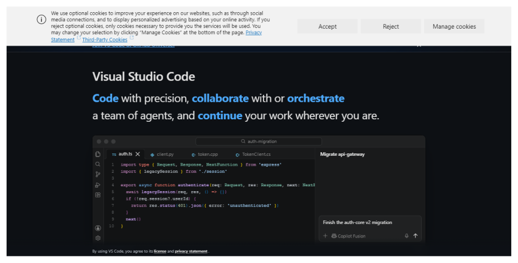
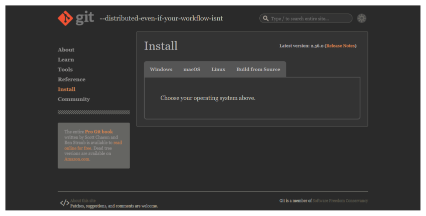
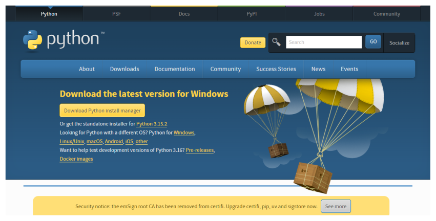

2. Install the tools¶
You will install three free programs and create one account. Do these once and you will not need to repeat them.
2.1 Install VS Code, the program you will write in¶
VS Code is a free text editor from Microsoft. Go to code.visualstudio.com, press the large download button, open the file you receive, and accept the choices the installer offers. On Windows, leave the box marked Add to PATH ticked, because that lets the terminal find it.

The VS Code download page. The site changes its wording from time to time, but the download button stays near the top. If a cookie notice appears, either choice is fine.
When VS Code first opens it may offer to sign you in to an assistant or to choose a theme. You can close these offers, since nothing in this guide needs them.
2.2 Install Git, the program that keeps your history¶
Git records each saved version of your files, so you can always go back. Go to git-scm.com/downloads and choose your operating system.

The Git download page. Choose Windows, macOS or Linux, then follow the instructions on the page that opens.
On Windows, run the installer and press Next on every screen, as the suggested settings are fine. On a Mac, open the Terminal application and type git --version, and the system will offer to install it. On Linux, use your system’s package manager, for example sudo apt install git.
Close VS Code and open it again so that it notices Git. Then open a terminal and tell Git who you are. Git writes this name and email on every version you save, and they become public if you publish your work.
git config --global user.name "Your Name"
git config --global user.email "you@example.org"
git config --global init.defaultBranch main
These commands print nothing when they succeed. To check, type git --version, which should print a version number.
2.3 Install Python¶
Python is a programming language, and here it runs small scripts. Go to python.org/downloads and press the yellow download button.

The Python download page. The page recognises your operating system and offers the right version.
On Windows, tick Add python.exe to PATH on the first screen of the installer before you press Install Now. It is easy to miss, and without it the terminal cannot find Python. Close and reopen VS Code, then check that it worked:
python --version
This should print a version number such as Python 3.13.0. On a Mac or on Linux, the command may be python3 instead of python. Use whichever works, wherever this guide says python.
2.4 Create a GitHub account¶
GitHub is a website that stores copies of Git projects and lets other people see them. Git is the program on your computer, and GitHub is the place online.
Go to github.com/signup. Enter your email, choose a password and pick a username. Choose the username with care, because it appears in your web addresses and is awkward to change later. Your real name, or a close form of it, works well for professional use. GitHub will send a code to your email to confirm the account. The free plan is all you need, so if you are offered a paid plan or asked to fill in a survey, you can skip it.
The first time you send work to GitHub, a window will ask you to sign in through your browser. Accept it, and your computer will remember the permission.